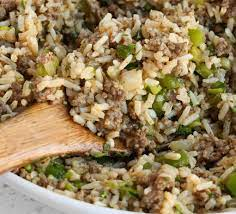

Rice Dressing

A roux based dirty rice that contains ground meat and rice
Another Louisiana stable that combines roux with a vegitable mix along with ground meat and rice
Ingredients
- Rice
- Ground meat
- Onions
- Celery
- Bell Pepper
- Garlic
- Tony Chachere Seasoning
- Garlic Powder
- Tabasco Sauce
- Kitchen Braquet
- Worcestershire Sauce
- Chicken Broth
- Chicken Bouillon
Steps
- Start cooking rice
- Season and brown the ground meat
- Cut up vegitables
- Once meat is browned add the vegitable mix
- When vegitables get cooked down add two tbls of roux
- Cook another 5-10 mins until roux is incorporated throughout
- Add in chicken broth and bouillon
- Season to taste with Tabasco, Worcestershire, Kitchen Braquet, and seasonings
- Reduce mix until rice is finished cooking
- Once rice if finished add to the mix and serve
Return to main page